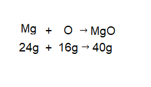
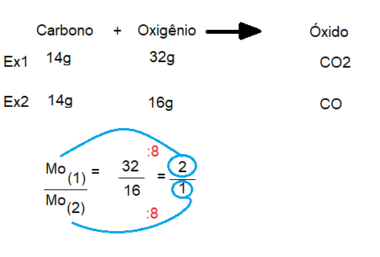

Leis ponderais
Lei de Lavoisier (lei da conservação de massa)
A lei de Lavoisier surgiu em torno de 1775, por Antoine Laurent Lavoisier e nesta lei, ele
afirma que: “Nada se cria, nada se perde, tudo se transforma”, ele formulou esta lei após realizar um
experimento com óxido de mercúrio como reagente, logo, ele aqueceu dentro de um sistema fechado, tendo como
produto mercúrio e oxigênio, e quando ele resolveu somar as massas, deu exatamente a massa do produto.
A sua lei é aplicada pela seguinte fórmula:

Lei de Proust (lei das proporções constantes)
A lei de Proust surgiu em torno de 1797, pelo químico francês Joseph Louis Prost,
a Lei de Proust afirma que as massas dos reagentes e dos produtos presentes em uma reação, deverão
acatar em proporções constantes. Essa lei foi proclamada quando
o químico realizou alguns experimentos com substâncias puras.
Logo abaixo temos um exemplo da lei de Proust:

Lei de Dalton (Lei das proporções múltiplas)
Proposta em 1803 pelo químico inglês John Dalton, essa lei fala que a massa dos
reagentes e as massas dos produtos que acontecem em uma reação deve obedecer a proporções constantes, ou seja,
ao agruparmos uma massa fixa de um reagente com a de outro reagente com massas diferentes, as massas que têm
variação tendem a possuir uma relação de números inteiros e pequeno.
Aqui temos uma aplicação da lei de Dalton:
